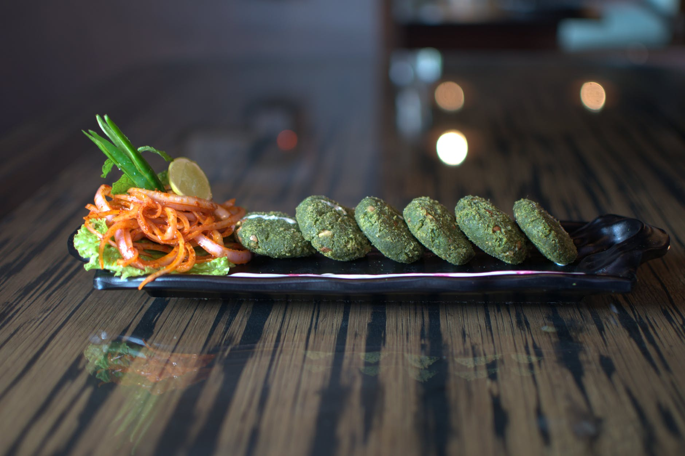

Green Kebabs
Green Kebabs, also known as Hara Bhare Kebabs, is one of my favourite Indian snacks. It is bascially a kebab filled with the good green stuff; spinach, coriander leaves and peas. It's a great appetizer for any occasion and in restaurants too! Best served with salad and/or dip! It's a mouth-watering dish and that's a promise!
Summary of Green Kebabs
Rating:
Main Ingredients:Peas, Coriander Leaves, A Variety of Spices, Potatoes and Spinach
Related Recipes/Eateries/Foods to Green Kebabs